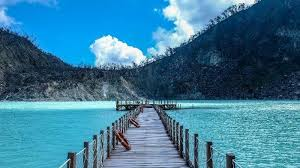
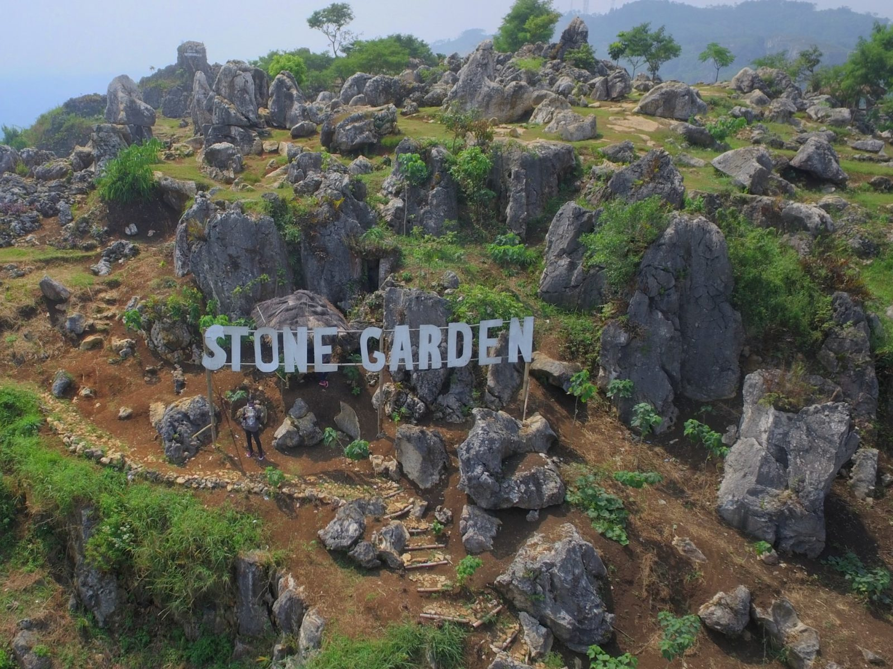

Bandung
Wisata Alam & Pegunungan.
wisata Alam & Pegunungan.

Tebing Keraton
Terletak di kawasan Dago Atas, Tebing Keraton menyuguhkan pemandangan hutan pinus dan kabut pagi yang menakjubkan. Dari puncaknya, kamu bisa melihat “lautan awan” yang jadi daya tarik utama. Tempat ini sangat populer untuk menikmati sunrise dan berfoto di atas tebing dengan panorama lembah hijau Bandung.
☀︎⋆࿔:Click for the location

Bukit Moko
Bukit Moko berada di daerah Cimenyan dan dikenal sebagai salah satu titik tertinggi di Bandung. Saat siang, pengunjung bisa menikmati udara segar dan hamparan hutan pinus, sementara malam hari menampilkan gemerlap lampu kota dari ketinggian. Di puncaknya juga terdapat area “Puncak Bintang” yang jadi favorit para pemburu foto.
☀︎⋆࿔:Click for the location

☀︎⋆࿔:Click for the location
Kawah Putih Ciwidey
Objek wisata ikonik di Bandung Selatan ini menawarkan keindahan danau berwarna putih kehijauan yang terbentuk dari aktivitas vulkanik. Suasana sejuk dan berkabut menambah kesan mistis tapi menenangkan. Kawah Putih sering jadi lokasi foto prewedding dan destinasi wajib bagi wisatawan yang baru pertama kali ke Bandung.
☀︎⋆࿔:Click for the location

Taman Hutan Raya Ir. H. Djuanda
Kawasan konservasi ini berada di utara Bandung, mencakup hutan pinus, gua Jepang dan Belanda, serta beberapa air terjun kecil. Jalurnya ramah untuk trekking santai dan cocok untuk pecinta alam yang ingin menikmati udara segar tanpa harus keluar jauh dari kota. Suasananya tenang dan rindang sepanjang tahun.
☀︎⋆࿔:Click for the location

☀︎⋆࿔:Click for the location
Stone Garden Citatah
Stone Garden menawarkan keindahan bentang alam batu kapur purba di atas bukit Citatah, Bandung Barat. Dari puncaknya, pengunjung bisa melihat formasi bebatuan unik yang berpadu dengan lembah hijau di sekitarnya. Tempat ini kerap disebut “Raja Ampat versi darat” karena panoramanya yang eksotis dan fotogenik.
☀︎⋆࿔:Click for the location

Taman Langit Pangalengan
Berlokasi di kawasan dataran tinggi Pangalengan, destinasi ini terkenal dengan pesona kabut pagi yang menyerupai negeri di atas awan. Hamparan kebun teh dan udara dingin membuat suasananya menenangkan. Waktu terbaik untuk datang adalah subuh hingga pagi hari agar bisa menikmati matahari terbit di balik lautan awan.
☀︎⋆࿔:Click for the location